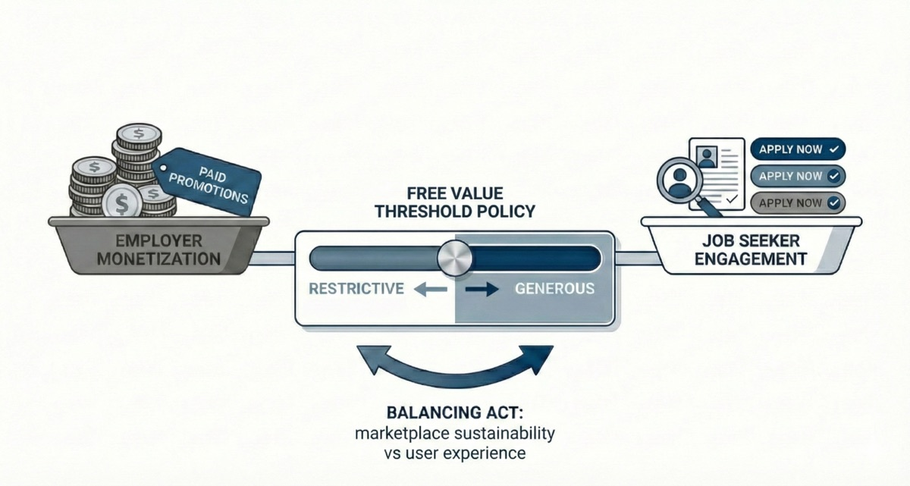
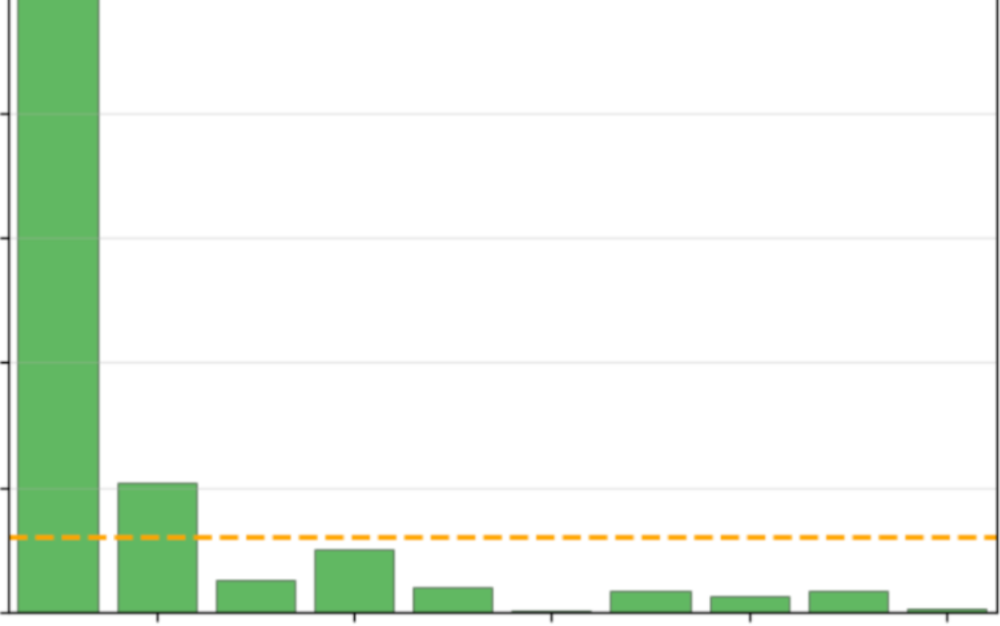
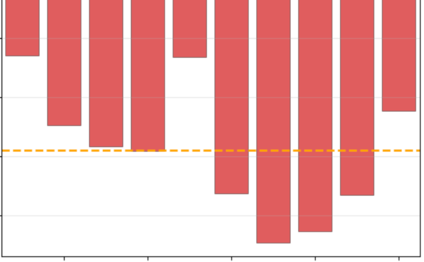
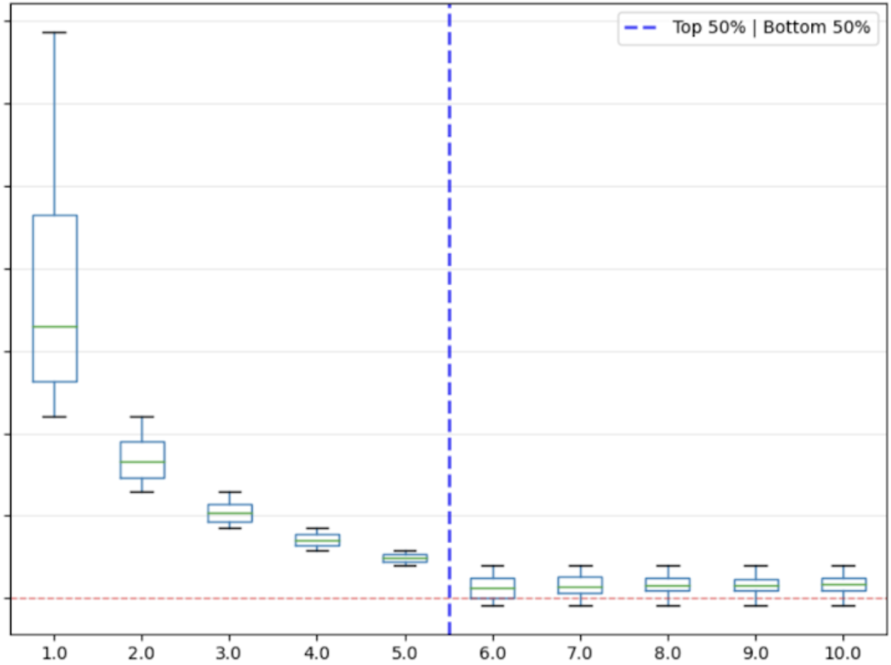
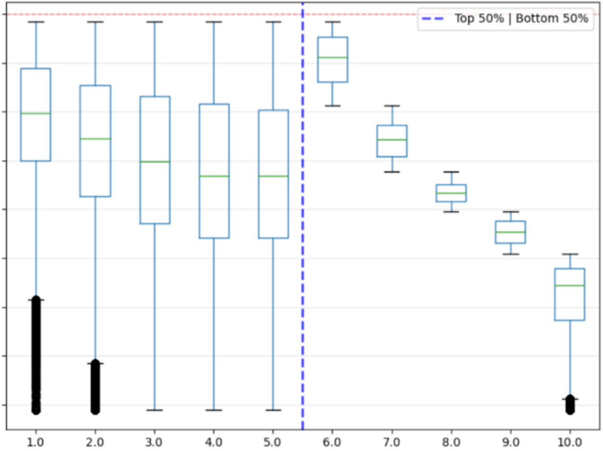
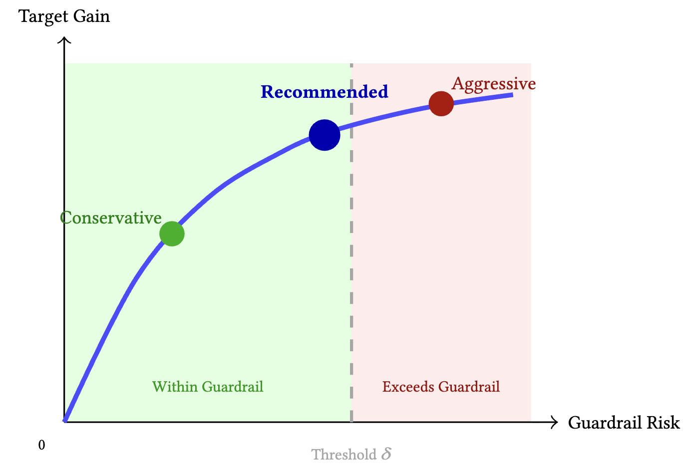
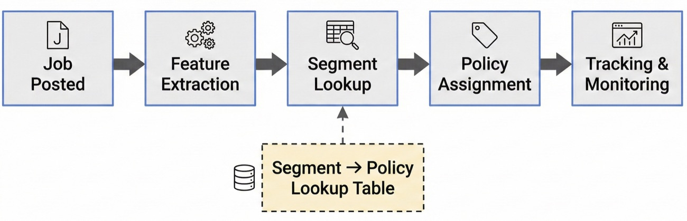

- Qini 0.11 → 0.21ガードレール指標についての順位づけの質。目的指標だけで並べると 0.11、ハイブリッド順位づけでは 0.21。目的指標の Qini は 0.80 から 0.83 で、ほとんど変わらない（Table 2）。
- ガードレールのリスク 10% 超減推奨した方策で、同じ目的指標の上昇を保ったまま、目的指標だけで並べる場合よりガードレールのリスクを 10% 以上減らした。
- 予測との差 10% 以内本番の A/B テストで、目的指標の上昇は統計的に有意で、オフラインの予測の約 0.9 倍だった。エンゲージメントの指標はすべてしきい値の範囲に収まった（Table 4）。
無料枠のしきい値は、企業側の収益化と求職者側のエンゲージメントを同時に動かす
二面マーケットプレイスでは、片側に有利な施策がもう片側の体験を損なうことがある。この論文が扱うのは求人マーケットプレイスの無料枠のしきい値（free-value threshold）で、求人に有料のプロモーションを求める前に、どこまでのサービスを無料で提供するかを決めるパラメータである。しきい値が甘すぎると有料化の動機が弱まり、マーケットプレイスの持続性が損なわれる。厳しすぎると持続性は保てるが、求職者の体験が悪くなりうる。
多くのプラットフォームはすべての求人に同じ方策を使う。しかし求人によって求職者の反応、収益化の見込み、施策への反応は大きく違う。論文はこの違いを使い、セグメントごとにしきい値を変えれば、求職者のエンゲージメントを守りながら収益化を改善できると考える。

標準のアップリフトモデリングがそのまま使えないのは、相手側への外部性と、処置水準を 2 つしか試せない実験のためである
相手側への外部性 企業側に向けた施策は、求職者側にも間接的な影響を与える。しきい値を変えると持続性は改善しうるが、魅力的な求人に届きにくくなれば求職者のエンゲージメントが下がるおそれがある。しかも影響はセグメントによって違い、エンゲージメントを落とさずに有料化する求人もあれば、有料化せずにエンゲージメントだけ落とす求人もある。論文によれば、従来のアップリフトの枠組みは転換数のような単一の目的を最大化し、予算や ROI の制約を加える拡張も、主目的に財務的な制約を重ねるだけで、両側の結果の相互作用は扱わない。
処置水準が少ない実験 マーケットプレイスでは参加者どうしの競合が干渉を生み、個人単位でランダム化すると推定が偏る。干渉を抑えるにはクラスタ単位でランダム化するが、ランダム化の単位が少なくなるため、試せる処置水準も少数に限られる。論文はこれを実質的な正値性（positivity）の破れとみなし、連続な処置を前提とする用量反応の推定法は使えないと述べる。
ガードレール指標の悪化の合計を \(\delta\) 以内に抑えながら、目的指標の処置効果の合計を最大にする方策を探す
求人 \(j\) について、特徴量を \(X_j\)、方策の水準（しきい値）を \(c_j\)、目的指標の結果を \(Y_j\)、エンゲージメントの結果を \(V_j\) とする。求める方策 \(\pi: X\to C\) は次の問題の解である。
\(\tau_Y(X,c)\) と \(\tau_V(X,c)\) は、基準の水準 \(c_0\) に対して水準 \(c\) をとったときの、目的指標とガードレール指標への処置効果である。\(\delta\) はガードレールのしきい値で、事業の関係者が許容できるエンゲージメントのリスクから決める。論文の枠組みは \(\delta\) を入力として受け取り、最適化はしない。
実験で結果を観測できるのは \(c\in\{c_0, c_1\}\) の 2 水準だけで、方策に必要なほかの水準は観測できない。これが実証面での中心的な課題である。
CATE の推定 処置効果は 2 水準の実験に向く X-learner で推定する。目的指標（有料の転換）は陽性がまれなので、転換の有無を予測するモデルと、転換した場合の金額を予測するモデルの二段階に分ける。基礎モデルは XGBoost で、学習・検証・ホールドアウトは企業単位で分ける。
方策は求人のセグメント単位で決める必要がある。ところが複数の求人を出す企業では、ある求人の方策を変えるとほかの求人での行動も変わりうる。そこで求人単位の結果で推定した CATE と、企業単位の平均の結果で推定した CATE を、重みづけして平均する。重み \(w_{\text{single}}, w_{\text{multi}}\) は、そのセグメントの求人のうち、求人を 1 件だけ出す企業の求人と複数出す企業の求人が占める割合である。
上位半分は目的指標の CATE で、下位半分はガードレールの CATE で並べ、その順位で方策の段階を割り当てる
目的指標の上昇とガードレールのリスクは相関するとは限らない。目的指標だけで最適化すると、エンゲージメントへの影響が特に大きいセグメントを見落としうる。そこで論文は次の手順をとる。
- ステップ 1 目的指標の CATE \(\hat\tau_Y(X)\) とエンゲージメントの CATE \(\hat\tau_V(X)\) を、別々のモデルで推定する。
- ステップ 2 上位半分には \(\hat\tau_Y\) が高〜中程度の求人を \(\hat\tau_Y\) の降順で並べる。下位半分には \(\hat\tau_Y\) が低い求人を、\(\hat\tau_V\) の負の度合いが小さい順に並べる。
- ステップ 3 この順位にもとづいて、段階的な方策を割り当てる（表1）。
- ステップ 4 \(\sum_j \hat\tau_V(X_j, \text{policy}_j)\ge -\delta\) を確かめる。満たさなければ、満たすまで下位のセグメントの方策を順に緩める。
| 群 | 目的指標の上昇 | ガードレールのリスク | 方策 | 理由 |
|---|---|---|---|---|
| A | 高 | 低 | 最も厳しい | 目的指標を最大化 |
| B | 中 | 低〜中 | やや厳しい | 目的とガードレールの釣り合い |
| C | 低 | 低 | 基準のまま | 得るものもリスクもない |
| D | 低 | 高 | 緩める | エンゲージメントを守る |
論文は代替案として、二つの指標を重みつきで足し合わせる方法と、パレート最適な方策を並べて関係者に選んでもらう方法を挙げる。前者は異なる側を担当するチームの間で重みに合意できず、後者は関係者が一つの推奨方策を求めたため、どちらも実務では使えなかったという。ハイブリッド順位づけでは、重みの代わりにしきい値 \(\delta\) がパレートフロンティア上の一点を決める。
論文は、順位（序数）にもとづく割当ては重みつきの目的（基数）の最適化より雑音に強いとも主張する。推定の標準誤差と同じ大きさの雑音を 100 通り加えた検証では、厳密なラグランジュ最適化に比べて目的指標の改善はおよそ 8% 小さいが、雑音で方策が入れ替わる割合は半分以下になった（脚注 2）。目的やガードレールが 3 つ以上ある場合への拡張も、指標を重みつきで合成する方法と、ガードレールごとに制約を置く一般の制約つき最適化として概略が示されている。
2 水準の実験から同定できるのは線形の用量反応までなので、未実験の水準には効果を線形に外挿する
実験から推定できるのは基準 \(c_0\) に対する水準 \(c_1\) の CATE \(\hat\tau(X, c_1)\) だけである。ほかの水準での効果は次のように外挿する。
論文は、線形を選んだのは好みではなく実験計画の帰結だと強調する。観測した水準が 2 つなら、データが同定できる用量反応は線形が上限である。高次の多項式には 3 水準以上か追加の関数形の仮定が、ノンパラメトリックな推定には処置の密な台が必要になる。対数線形や指数のような単調な変換も 2 つの平均には同じように当てはまるが、2 水準からは区別できない。用量反応が全体として線形だと主張しているわけではない、とも明記している。
それでも方策が妥当だといえる根拠として、論文は二つを挙げる。一つは、方策の段階を CATE の大きさではなく順位で決めていることで、順位は用量反応の単調な変換で変わらない。もう一つは、展開した方策の範囲が実験で観測した変化幅 \(c_1-c_0\) の約 50% 以内に収まっていることである。この範囲では、後述のオフラインの感度分析と展開後の検証が、線形からのもっともらしいずれに対して推奨が頑健であることを確かめている。
目的指標の CATE で並べてもガードレールへの影響は単調に並ばず、ハイブリッド順位づけはガードレールの Qini を 0.11 から 0.21 に上げた
データ 数週間にわたるクラスタ単位のランダム化実験に掲載された求人を使う。群は基準の方策を使う対照群と、別の水準を使う処置群の二つである。標本の大きさは非公開だが、割当ての偏りはサンプル比のずれ（SRM）の検定と事前の A/A テストで確認したという。特徴量は文脈属性およそ 10 個で、企業単位で学習 60%・検証 20%・ホールドアウト 20% に分ける。
CATE モデルの検証 ホールドアウトのデータで予測 CATE の十分位ごとに観測した処置効果と比べると、相関は目的指標で 0.95、ガードレールで 0.86 だった。20 区分にすると 0.79 と 0.75 である。目的指標の Qini 係数は 0.80 で、論文はこれを、達成できる最大のアップリフト利得の 80% をとらえていると解釈する。付録では X-learner と R-learner の CATE の順位相関が目的指標で 0.74、ガードレールで 0.89 だった。GRF はガードレールでは 0.76〜0.78 と近いが、目的指標では 0.35〜0.36 と離れた。
図2の右は目的指標の CATE で並べた十分位ごとのガードレールへの影響である。影響は単調に並ばず、十分位によって大きくばらつく。目的指標の効果が同じように小さいセグメントでも、ガードレールへの影響が平均よりずっと小さいものと、ずっと大きいものがある。目的指標だけで最適化すると、エンゲージメントのリスクが大きく違うセグメントに同じ方策を当てることになる。


図2 ホールドアウトのデータでの CATE モデルの評価（論文 Figure 2）。左端が予測 CATE の上位の十分位。橙の破線は ATE。縦軸の目盛りの値は論文の図にも示されていない。
ハイブリッド順位づけでは、上位 50% が目的指標の上昇の高〜中程度の群 A と B、下位 50% が群 C と D にあたる（図3）。下位 50% は目的指標の上昇がほぼ 0 だが、ガードレールのリスクは 0 に近いものから大きく負のものまで幅がある。


図3 ハイブリッド順位で分けた 10 群ごとの CATE の分布（論文 Figure 3）。青の縦の破線が上位 50% と下位 50% の境目。CATE を 100 回のブートストラップで推定し直して群を作り直しても、群ごとに観測した処置効果の順序はおおむね保たれた（付録 B）。
| 順位づけの方法 | 目的指標の Qini | ガードレールの Qini |
|---|---|---|
| 目的指標のみ | 0.80 | 0.11 |
| ハイブリッド（提案） | 0.83 | 0.21 |
ガードレールの Qini はほぼ倍（+91%）になり、目的指標の Qini はほとんど変わらなかった。論文は、下位 50% はどう並べても目的指標の上昇がほぼ 0 なので目的指標の順位の質には響かず、ガードレールの保護には大きく効く、と説明する。推奨した方策では同じ目的指標の改善を保ったまま、目的指標だけで並べる場合よりガードレールのリスクを 10% 以上減らした。
推奨する方策はガードレールのしきい値上にあり、用量反応の曲率を ±20% 変えても効果の推定は 8〜9% しか動かない
論文は候補の方策を効率的フロンティアの上に並べて示す（図4）。目的指標の改善は小さいがガードレールのリスクも最小の保守的な方策、しきい値の範囲で目的指標の改善が最大の推奨方策、改善は大きいがしきい値を超えるので退けた積極的な方策の三つである。図はトレードオフを見せるためのもので、ハイブリッド順位づけはフロンティアをたどらずに推奨方策を直接出す。推奨方策は得られる目的指標の改善の大部分をとらえ、エンゲージメントへの影響をしきい値の範囲に収める。

線形の外挿の仮定への感度も調べた。線形から 20% 凹（収穫逓減）または 20% 凸（収穫逓増）にずらすと、方策の効果の推定はそれぞれ +8% と −9% 変わった（Table 3）。方策は効果の大きさではなく順位で決まるので、論文はこの程度の変化では推奨は変わらないとしている。
本番の A/B テストで目的指標の上昇は予測の約 0.9 倍、ガードレールはしきい値内に収まり、中間の水準でも外挿は観測と相関 0.85 で合った
展開は 3 段階で進めた。推奨方策で数週間のオンライン A/B テストを行い、結果を読んで拡大を判断し、対象の求人の 100% に広げた。本番ではリアルタイムにモデルで推論せず、セグメントから方策を引く参照表を配る（図5）。似た求人には同じ扱いをする必要があるのでセグメント単位で決めることになり、参照表なら 1 秒未満の応答、モデル配信の基盤が不要、監査と不具合の調査がしやすい、という利点もある。参照に失敗したときは基準の方策に戻す。

| 指標 | 予測 | 観測 | 判定 |
|---|---|---|---|
| 目的指標の上昇 | \(\theta\)% | 約 \(0.9\theta\)% | 統計的に有意、予測との差 10% 以内 |
| ガードレール | \(\ge -\delta\) | \(> -\delta\) | しきい値の範囲内 |
段階的に拡大する途中で、元の実験になかった中間の水準も展開した。2 水準の実験から外挿した予測をこれらの水準で観測した処置効果と比べると、相関は \(r = 0.85\) だった。セグメントの順位もおおむね予測と一致し、大きさがずれた場合も、方策を決める順位は安定していた。予測した上昇が極端なセグメントではずれが大きく、論文は裾のデータが少ないことと、極端な領域では反応が非線形でありうることを理由に挙げる。処置効果は方策を厳しくするにつれておおむね単調に増えた。
論文は、線形の外挿が信頼できる条件として、外挿の範囲が限られていること（今回は観測した変化幅の約 50% 以内）、方策が効果の正確な大きさではなく順位で決まること、全面展開の前に段階的な拡大のデータで予測を確かめられることを挙げている。
線形の外挿は展開した範囲でしか確かめられておらず、結果はこの求人マーケットプレイスでの短期の効果である
線形の用量反応の仮定は展開した範囲（観測した変化幅の約 50%）で確かめただけで、方策の極端な値では崩れる可能性が高いと論文は述べる。しきい値が非常に低ければ行動にしきい値効果が、非常に高ければ収穫逓減が現れうる。緩めるには処置水準を増やした実験か、相手側のガードレールを守りながら水準を探索する仕組み（文脈付きバンディットなど）が要る。
結果はこの求人マーケットプレイスの構造に依存し、ほかのプラットフォームに当てはまるかは、処置効果の異質性、関心のある範囲でのおおむね線形な用量反応、相手側への外部性といった条件がそろうかによる。展開後の証拠は短期の処置効果で、長期の影響を測るため、市場の一部に基準の方策を数か月使い続けるホールドアウトを運用中だという。
このページの数値は arXiv v1（2026 年 6 月 29 日、ACM の DOI を付けた著者版）の本文と表による。ACM の出版版（KDD '26 会議録、pp. 8279–8288）とは照合していない。
制約は予算ではなくガードレール指標だが、合計への制約を守りながら目的を最大にするように処置を個別化する形は予算制約つきの割当てと同じである
- 推定するもの 目的指標（企業の有料転換と収益化）とガードレール指標（求職者のエンゲージメント）の CATE を別々に。求人単位と企業単位の CATE を、セグメントの構成で重みづけして平均する。
- コストの扱い 金銭的なコストは扱わない。目的指標とは別に推定したガードレール指標への負の処置効果が、制約にかかる量になる。
- 処置の種類 無料枠のしきい値という連続的な水準。ただし実験は 2 水準で、方策は表1の 4 段階に分けて割り当てる。
- 制約 ガードレール指標への効果の合計が \(-\delta\) 以上。\(\delta\) は事業の関係者が決める。ハイブリッド順位で割り当てたあと、制約を満たすまで下位のセグメントの方策を緩める。
- データ 自社の求人マーケットプレイスでのクラスタ単位のランダム化実験と、本番の A/B テスト・段階的な展開。データは非公開。
予算制約つきの割当てとの関係を補足しておく（解説者の注）。問題設定の式は予算制約つきの割当てでよく使う「処置効果の合計を最大化し、費用の合計を予算以下に抑える」問題の費用を、ガードレール指標への負の効果に置き換えた形をしている。どちらも目的への効果と制約にかかる量を個人（ここでは求人のセグメント）ごとに推定し、その両方を見て誰にどの処置を当てるかを決める。違いは解き方で、この論文は効果と制約量の比やラグランジュ緩和で解くのではなく、目的指標の順位とガードレールの順位を半分ずつ使う規則で割り当て、制約は事後に確かめて緩める。論文は厳密なラグランジュ最適化と比べて目的指標の改善が約 8% 小さいかわりに雑音に強いと報告しているが、予算制約つきの手法とは比べていない。論文自身は予算や ROI の制約を加えた既存のアップリフト研究を「主目的に財務的な制約を重ねたもの」と位置づけ、相手側の結果を制約にする自分たちの設定と区別している。
@inproceedings{wu2026personalizing,
title = {Personalizing Marketplace Policies with Competing Objectives and Constrained Experiments: Evidence from a Job Marketplace},
author = {Wu, Yufei and Yan, Zhen},
booktitle = {Proceedings of the 32nd ACM SIGKDD Conference on Knowledge Discovery and Data Mining V.2},
pages = {8279--8288},
year = {2026},
publisher = {ACM},
doi = {10.1145/3770855.3818460}
}